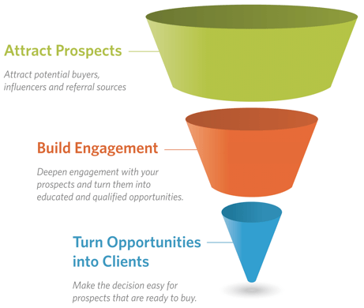

Business Development
Business development (BD) is the process that is used to identify, nurture and acquire new clients and business opportunities to drive growth and profitability. A business development strategy is a document that describes the strategy you will use to accomplish that goal. The scope of business development can be wide ranging and vary a lot from organization to organization. Consider the model of how professional services organizations get new business shown in Figure 1. Figure 1. 3 stages of the marketing funnel
The first two stages of the model, Attracting Prospects and Build Engagement, are traditional marketing functions. The final stage, Turning Opportunities into Clients, is a traditional sales function. In the traditional role, business development would be looking for new channels of distribution or marketing partners. But roles are changing and naming conventions evolve. In today’s world many firms refer to the entire marketing and sales process as business development. I know, it can be confusing. So let’s sort it out a bit.